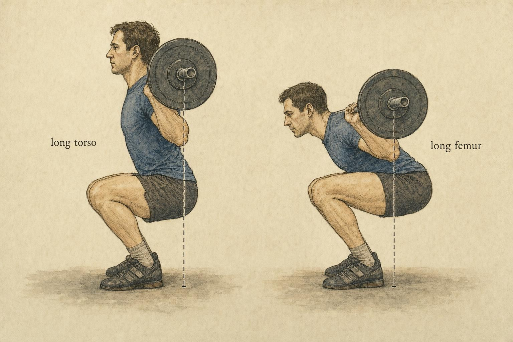
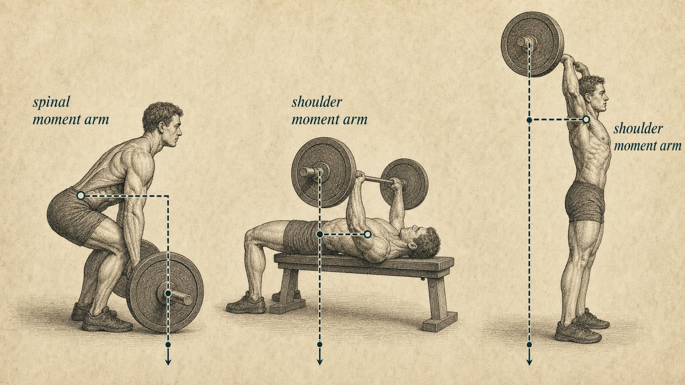

Anthropometry: Why Ideal Form Is Personal
Your proportions set the lever arms, and the lever arms set the form.
Two learners walk up to the same barbell loaded with the same weight. Both are strong, both are healthy, both have trained for years. One of them squats with a nearly vertical torso, knees driving far forward, and reaches depth easily in a narrow stance. The other, under the identical load, folds forward at the hip until the chest points almost at the floor, plants the feet wide, and drives the hips back like a hinge. Watch the comment section under any lifting video and you will find people insisting one of them is doing it wrong.
They are both doing it right. The difference between them is not discipline, not mobility work left undone, not a coaching error waiting to be corrected. It is measured in centimeters of bone. This chapter is about those centimeters, and about why, once you understand them, the search for the one correct squat quietly dissolves into a family of individually optimal solutions.
This chapter follows a learner named Paloma as a running thread. Paloma is 29, has been training for four years, and came into this course after a well-meaning training partner spent three months trying to fix her deadlift. Her partner had read that sumo pulling was a shortcut for lifters who struggled to hold a strict conventional back position, and pushed her to switch stances, tighten her setup, and chase a bar path that looked like his. It did not go well, and we will return to exactly what happened later in the chapter, once you have the tools to see why. Paloma is not a case to be solved and not a diagnosis to be made. She is a stand-in for a very common experience: being handed a single picture of correct form and being told, implicitly or explicitly, that anything else is a mistake to be corrected.
The theme finally gets a name
Across every movement-pattern chapter so far, one observation kept reappearing in the margins. The same lift looks different on different bodies, and that difference is mechanical, not moral. We saw it in the squat's hip and knee tradeoff, in the deadlift's spinal moment arm, and in the pressing and pulling leverages of the two chapters before this one. Each time we noted it and moved on, because naming it fully would have meant getting ahead of the mechanics you needed first. Now, with torque, moment arms, and honest ranges of motion all established, we make the observation the explicit subject of an entire chapter.
The name for it is anthropometry, literally the measurement of the human body, the systematic quantification of segment lengths, breadths, and their ratios. Anthropometry is not an aesthetic category, and it is not a genetic destiny you are stuck lamenting. It is the input layer to every torque equation this course has been running from the beginning. External moment arms are geometric distances between a joint's center and a line of force, and those distances are built out of segment lengths. Your proportions literally set the lever arms. Set the lever arms and you have set the demand at each joint. Set the demand and you have, in large part, predicted the form that minimizes it.
That is the throughline of this chapter, and it is worth stating as a claim you can test: ideal form is a function of proportion. Not entirely. Load, goal, mobility, and personal preference all matter too, and none of them disappear just because proportion is now on the table. But proportion is the term people most consistently forget when they judge someone else's technique, and it is the one that turns everything you have learned so far into a genuinely personalized predictive model. By the end of this chapter, you will be able to look at a learner's basic proportions and predict, with real confidence, the shape their best squat, hinge, and press are likely to take.

A five-minute refresher on moment arms
Let us reset the vocabulary just enough to build on it, because the rest of the chapter leans on this one idea repeatedly. A moment arm is the perpendicular distance from a joint's axis of rotation to the line of action of a force. The external torque a joint must resist equals force multiplied by that perpendicular distance. When a learner holds a load, the load's gravitational vector points straight down. The horizontal distance between a joint center and that vertical line is the external moment arm at that joint, and the muscles crossing the joint must generate an internal torque to match it, rep after rep, or the joint gives way to the load.
The consequence for anthropometry is direct and, once you see it, hard to unsee. If a longer femur pushes the knees or hips a greater horizontal distance from the barbell's line of gravity, the external moment arm at that joint grows, for the same load, on the same day, with technique held constant. To keep the total demand tolerable, the body reorganizes. It changes torso angle, stance width, grip width, or depth so that the sum of the moment arms across the involved joints lands somewhere manageable. Form, in other words, is the body's ongoing solution to a moment-arm optimization problem whose coefficients are the learner's own segment lengths. Nobody is solving that problem consciously, with a calculator in hand. The nervous system finds a workable solution through practice and feedback, and the workable solution it finds looks different on different skeletons because the coefficients feeding the problem are different.
A rough number makes the point concrete. Imagine two learners at the bottom of a squat, each with a knee positioned twenty centimeters horizontally in front of the barbell's line of gravity. The knee moment for both is identical, load multiplied by twenty centimeters. Now imagine one of those learners has a femur three centimeters longer than the other, with torso length held equal. To keep the bar over the midfoot at the same depth, that longer femur has to be accommodated somewhere, and the honest options are limited: the knee travels further forward, the hip travels further back, or the trunk leans further forward to split the difference. Whichever combination the body settles on, the total horizontal distance from bar to hip and from bar to knee has to sum to roughly the same value the geometry demands. A three-centimeter difference in one segment does not vanish. It has to show up as a measurable difference in lean, stance, or joint angle somewhere in the chain, and predicting where it shows up is exactly the skill this chapter is teaching.
The squat: the femur-to-torso ratio in charge
The squat is the cleanest place to see proportion drive form, because it is a genuine two-joint balancing act. The barbell has to travel over the midfoot. That constraint is not negotiable; it is what keeps the whole system balanced on two feet instead of tipping over. Everything else in the squat is free to move so that the bar stays over that base of support. The critical anthropometric variable governing how that freedom gets used is the ratio of femur length to torso length.
Consider a learner with a long femur relative to their torso. As they descend, the knees must either travel far forward or the hips must travel far back to keep the bar over the midfoot. Push the knees forward and the knee's external moment arm balloons. Push the hips back instead, and the horizontal distance from hip to bar grows long, which the trunk has to counter by inclining forward. The long-femur learner's escape hatch is precisely that forward lean. By tipping the torso, they shorten the effective distance the hips travel behind the bar and redistribute demand across the hip and knee rather than letting either one spike on its own. This is why long-femur lifters tend to look more folded at depth. It is not that they lack mobility. Leaning is their mechanically cheapest path to depth, full stop.
The empirical picture backs this up cleanly. Demers and colleagues (2018) had 32 adults squat at three stance widths, each normalized to pelvic width, and measured how far the hip, knee, and ankle traveled through range of motion at each width. They found that a greater trunk-to-thigh length ratio, meaning a relatively long trunk, was associated with lower ankle and knee flexion angles needed to reach depth, while a greater thigh-to-shank ratio, meaning a relatively long thigh, demanded higher ankle and knee flexion, especially in narrow stances. Crucially, they also showed that widening the stance mitigated the range-of-motion demand that proportion imposed. Stance width, in other words, is not a style choice handed down from outside. It is a lever a learner can pull to compensate for the femur they happened to be issued.
Park and Lim (2021) sharpened the same finding under real load. Testing 53 participants squatting at seventy-five percent of one-repetition maximum, a load heavy enough to matter but light enough to move safely for research purposes, they found that the femur-to-tibia length ratio was associated with changes in ankle dorsiflexion and knee flexion angle specifically in narrow stances, and that hip and knee net joint torques correlated moderately with their corresponding flexion angles. Read the two studies together and the logic clicks into place. Proportion sets the joint angles required to reach depth. Joint angles track the net torques the muscles must produce. And stance width is the dial that lets a given body redistribute those torques into a range that feels sustainable.
The trunk-and-tibia trap
Here is where casual analysis goes wrong, and where a careful reader needs to slow down. It is tempting to look at a forward-leaning squatter and conclude they are putting more stress on the knees, or on the back, as if trunk angle told the whole story by itself. But Straub and Powers (2024), in their biomechanical review of the squat, make the point sharply: forward trunk inclination and forward tibia inclination have opposite effects on the knee flexion moment. A more forward trunk actually reduces the knee moment while increasing the hip moment. A more forward tibia does the reverse, increasing the knee moment while reducing the hip moment. Evaluate either variable in isolation and you will draw the wrong conclusion about which joint is actually under the most strain. Sagittal trunk orientation is the primary driver of the split between hip and knee demand, and it is co-determined by proportion, not chosen at random.
Schoenfeld's (2010) comprehensive review of squat kinematics ties the point together. Stance width, foot rotation, depth, and bar placement all shift the joint kinematics and kinetics of the lift, and, in the sentence that matters most here, individual anatomical factors interact with each of those technique parameters rather than sitting apart from them. There is no context-free correct stance, because stance interacts with the femur attached to the person standing in it. A stance width that distributes torque sensibly on one skeleton can concentrate it badly on another.
It helps to sketch a few composite patterns, not as boxes to sort learners into, but as illustrations of how these variables combine in practice. Picture a learner with a proportionally short femur, an average torso, and generous hip and ankle mobility. That combination lets the shank tilt well forward and the knee travel a long way without ever demanding much trunk lean to keep the bar over the midfoot, which is why some learners can squat almost straight up and down with the bar riding high on the back. Now picture a learner with a long femur and an average or short torso, whose hips must travel further back at any given depth, and whose torso must lean further forward to compensate, regardless of how mobile the ankles happen to be. Finally, picture a learner with average limb proportions but limited ankle dorsiflexion, who reaches a mechanical ceiling on knee travel earlier than the other two, and who compensates the same way, hips back, torso forward, but for a mobility reason rather than a length reason. Three different bodies, three different visible squats, and notice that the same forward-lean solution can emerge from three entirely different mechanical causes. A single photograph of any one of these squats tells a viewer almost nothing about which cause actually produced it, which is exactly why judging technique from a still frame is such an unreliable habit.
The hinge: torso length runs the deadlift
Where the squat is governed most by the femur-to-torso ratio, the conventional deadlift's dominant variable is the spinal moment arm: the horizontal distance from the barbell to a learner's hips and lumbar spine at the moment the bar breaks the floor. Anything that lets a learner start with the bar closer to the hips, or with a more upright trunk, shrinks that moment arm and lowers the demand on the posterior chain and the spinal extensors that have to resist it for the whole pull.
This is exactly where the sumo-versus-conventional argument stops being tribal and becomes anthropometric. Cholewa and colleagues (2019) put 47 deadlift-naive participants through a full anthropometric profile, measuring arm length, hand length, seated height, thigh length, and lower leg length, then correlated those measures against sumo and conventional performance. Their headline finding is a gift to this chapter: a longer sitting-height-to-height ratio, meaning a relatively long torso, was associated with relatively better sumo performance, while shorter-torso participants tended to favor conventional. The reason is geometric, not stylistic. A long-torso learner pulling conventional has to fold a long lever forward, generating a large spinal moment arm before the bar even leaves the floor. The wide sumo stance lets that same learner sit down between the legs, raise the hips' starting position relative to the bar, and pull with a noticeably more vertical trunk.
Escamilla and colleagues (2000) had already measured what that difference looks like in elite lifters. Filming twelve sumo and twelve conventional powerlifters at a national championship, they found sumo lifters maintained trunk and thigh positions roughly five to ten degrees more vertical, used a far wider stance, seventy centimeters versus thirty-two, and turned their feet out more. Vertical bar travel and total mechanical work were twenty-five to forty percent greater in the conventional style, meaning the bar and the body simply had to do more total work to complete the same lift. Tellingly, ankle and knee moments and moment arms differed significantly between the two styles, while hip moments did not. The sumo lifter does not escape hip demand. They redistribute knee and bar-path demand and shorten the distance the load has to travel. Proportion decides which of those tradeoffs is the better deal for a given body.
It is worth sitting with why the wide stance actually works, mechanically, rather than just accepting it as a rule of thumb. Widening the feet and turning them outward lets the pelvis drop lower between the thighs without the trunk needing to fold forward to reach the bar. The hips, in effect, travel down and slightly forward relative to a conventional setup, rather than staying high and shifting back. For a learner with a long torso, that repositioning is worth a great deal, because it is precisely the long lever from hip to shoulder that generates a large spinal moment arm when the trunk inclines forward. Shorten how far that trunk has to incline, and the moment arm shrinks accordingly, even though the load and the floor-to-lockout distance have not changed at all. For a learner with a short torso, the same repositioning buys much less, because a short torso was never going to incline very far forward in the first place. The wide stance is not a universal upgrade. It is a tool that pays off in proportion to how much forward lean it actually removes, which is precisely why torso length, not general athleticism or flexibility, is the variable that predicts who benefits most.
Limb length matters on top of torso length. Lockie and colleagues (2018) measured arm and leg length in 23 resistance-trained participants across conventional and high-handle hexagonal-bar deadlifts and found, in men, that leg length correlated positively with absolute conventional deadlift one-repetition maximum, and that arm length correlated with peak power and mean force. Longer arms shorten the vertical distance the bar has to travel and let a learner reach the bar with a more upright trunk from the very start, a smaller spinal moment arm before the pull even begins. This is the same reason long-armed lifters often look almost casually upright at lockout. Their proportions handed them a shorter lever to manage.
Tinsley (2023) points toward where this research is heading. Using three-dimensional optical scanning to capture arm, torso, thigh, and shank length in resistance-trained males, then full motion capture and force plates across sets of five repetitions at five different loads, he applied multiple regression to identify which anthropometric measures predict conventional deadlift kinematics and kinetics. The sample was small, a preliminary study of eleven participants, and that honesty is worth carrying forward: this whole field runs on correlational, modest-sample studies that are easy to over-read if a reader is not careful. But the direction of the findings is remarkably consistent across labs, across lifts, and across research groups that were not coordinating with each other, and that consistency is what gives us license to reason qualitatively even where precise numerical coefficients remain unsettled.
Pressing and pulling: the arm-to-torso ratio
The upper-body patterns obey the same logic, with the arm-to-torso ratio in the lead role. In the bench press, longer arms mean a longer bar path, since the bar has to travel farther from chest to lockout, and a longer moment arm at the shoulder and elbow through much of that range. This is why long-armed lifters often benefit from a slightly wider grip or a touch more arch: both shorten the effective distance the bar has to travel and pull the moment arms back in toward the joint. A short-armed, thick-torso lifter, by contrast, starts with a naturally short bar path and a mechanical advantage in the press that has nothing to do with how hard they train.
In overhead work, the same arm length that shortens a deadlift's bar path lengthens the distance a load has to travel overhead and increases the shoulder moment arm through the sticking region. And in pulling movements such as rows and chin-ups, arm and torso length set where the load sits relative to the shoulder and elbow throughout the whole pull. Vidal Perez and colleagues (2021) extended the proportion-performance link into weightlifting, measuring limb lengths through a standardized anthropometric protocol in nineteen competitive lifters and finding, among other results, significant positive correlations between foot length and both snatch velocity and snatch performance in the women in their sample. The mechanism is not identical to the mechanism at work in the powerlifts, but the moral holds: proportion reaches into overhead pulling and squat-receiving patterns too. There is no lift where segment lengths sit quietly on the sidelines.
Grip width deserves a closer look, because it is the one variable in this section a learner can change without changing anything about their skeleton, and it interacts directly with arm length. A wider grip on the bench press shortens the distance the bar has to descend to touch the chest and shortens the range over which the shoulder and elbow moment arms stay large, which is exactly why it tends to help a long-armed presser. But a grip that is too wide relative to shoulder width shifts strain onto the shoulder joint itself and can shorten the range through which the chest and triceps do useful work, so the benefit has a ceiling. The same logic runs in reverse for a short-armed presser, who may find a slightly narrower grip keeps the bar path efficient without sacrificing the natural advantage a short torso-to-arm ratio already provides. Grip width, in other words, is not a fixed number handed down by convention. It is a second lever, alongside stance width in the squat, that a learner can adjust once they understand which moment arm they are actually trying to manage.

Proportion, range of motion, and the course line
Recall the honest ranges of motion established earlier in this course. Bone geometry, meaning the depth and orientation of the hip socket, the angle of the femoral neck, the shape of the articular surfaces, sets hard limits on where a joint can travel, and no amount of practice moves those limits very far. Proportion sets how far a load's line of gravity sits from a joint within those hard limits. Together, bone geometry and proportion define what a given body can do and, in large part, what it should do to move a given load efficiently. A learner is not a universal template with a personal deviation that needs correcting toward some average. They are a specific set of lengths and geometries whose mechanical optimum is genuinely, individually their own.
This is also where we hold the course's line firmly, because it is easy to let this chapter's enthusiasm for individual variation slide into carelessness about symptoms. Variation is normal and expected. A squat that looks nothing like the textbook diagram is not evidence of a wrong body. Far more often, it is evidence of a body that has found its own moment-arm solution to a real balance problem. At the same time, a lift that reliably provokes discomfort is a sign that warrants professional evaluation, not a diagnosis a learner or a training partner should attempt to make from a video, and certainly not proof that a learner's proportions are somehow defective. Those two commitments are not in tension with each other. Respecting anthropometric variation and taking symptoms seriously are, in fact, the same intellectual habit: refusing to force a real body into an idealized template, whether that template is a photograph of ideal form or an assumption that discomfort must always mean something is broken.
The best technique for an individual is the one that optimizes the interaction between their unique anthropometry and the mechanical demands of the task, not the one that most closely resembles a photograph of someone else.
Synthesis of Schoenfeld (2010) and Straub & Powers (2024)
Case study: Paloma and the pull that was not broken
Run Paloma's proportions through this chapter's tools and the picture gets much clearer. Measured honestly rather than guessed at, Paloma has a torso on the shorter side relative to her height, arms that are proportionally long for her frame, and a femur length close to average. Recall what Cholewa and colleagues (2019) found: a longer sitting-height-to-height ratio favors sumo, while a shorter torso favors conventional, because a short torso keeps the spinal moment arm manageable without needing the wide sumo stance to compensate. Paloma's torso proportions were already telling her, before her training partner ever said a word, that conventional was the mechanically cheaper option for her spine. And her long arms compounded the advantage: following Lockie and colleagues (2018), longer arms shorten the vertical distance the bar has to travel and let a learner reach the bar with a more upright trunk from the very start of the pull, a benefit conventional pulling lets a long-armed learner cash in fully. Sumo, by folding her into a wide stance with her hands closer to the floor between shortened lever arms, did not offer Paloma the geometric advantage it offers a longer-torso learner. It cost her one.
Suppose, for a moment, that nobody had ever watched Paloma lift, and all that was available was a measuring tape. A short torso relative to height predicts a compact starting position, hips that do not need to travel far back to reach the bar, and a conventional stance that lets the trunk sit closer to vertical than a longer-torso learner would ever manage in the same stance. Long arms predict a shorter net distance from shoulder to bar at the bottom of the pull, which predicts an upright-looking setup at lockout and a bar path that stays close to the shins the entire way up, because there is simply less horizontal distance for it to drift. An average femur predicts a stance width that does not need to be pushed toward either extreme to keep the knees out of the bar's path. Put those three predictions together and you get, essentially, Paloma's original pull: moderate stance, hands just outside the knees, a trunk angle that looks upright for conventional without ever needing the sumo-style hip drop to get there. None of that required watching her lift even once. It required only her proportions and the logic this chapter has been building.
Notice what this is not. Paloma's original conventional pull was not a technique fault waiting to be discovered and corrected by a more observant training partner. It was a mechanically coherent solution to her own proportions, arrived at, whether she knew the mechanism or not, through years of practice finding the setup that let her move the bar with the least wasted torque. The discomfort that showed up under sumo was not a sign that her body needed more mobility work or a longer adaptation period before the new stance would click. It was, more plausibly, a body correctly reporting that the new setup was asking her spine to do something her original setup never had to.
This is also exactly where the line has to hold. None of this chapter's reasoning tells you whether Paloma's back sensation was a minor, load-related irritation that would resolve by returning to her original stance, or something that deserves a closer look from someone qualified to examine her spine directly. What the mechanics can responsibly tell Paloma is why her original pull was not the compromise her training partner assumed it was. What the mechanics cannot tell her is what to do about a new symptom that appeared with a new stance. That distinction, between explaining why a pattern makes mechanical sense and clearing a learner to keep training through discomfort, is precisely the line this course does not cross. A discomfort that shows up with a specific change and does not resolve when the change is undone is a sign that warrants professional evaluation, not a puzzle for a training partner or a course chapter to solve by video.
There is a broader lesson buried in Paloma's story, and it is the one this whole chapter has been building toward. Her training partner's cue was not careless, and it was not born of bad intent. It was a real, evidence-adjacent belief, that sumo does shorten the pull and reduce spinal demand for many lifters, and it is a legitimate, well-supported option for the right body, applied to the wrong body. The same cue that would have helped a longer-torso learner pull with less spinal demand asked a shorter-torso, longer-armed learner to give up a real mechanical advantage she already had. A cue is not universally right or universally wrong. It is right for the proportions it was built to serve, and it is worth asking, every time you hear one, right for whom.
From template to prediction
You now have the machinery to do the thing this course has been building toward across three chapters of leverage and one chapter of proportion: take a learner's key measurements and predict, qualitatively, how their ideal squat, hinge, and press will differ from someone else's, before you ever watch them lift. Long femur relative to torso? Expect more forward lean and a wider, foot-rotated stance in the squat, with a widening stance acting as the dial that buys back depth (Demers et al., 2018; Park & Lim, 2021). Long torso? Expect a sumo lean in the deadlift, because folding that long trunk conventionally is expensive in spinal moment arm (Cholewa et al., 2019; Escamilla et al., 2000). Long arms? Expect a shorter deadlift bar path and a more upright pull, but a longer bench bar path that rewards a wider grip (Lockie et al., 2018). None of these are rules to enforce on a learner who does not fit them. They are predictions to test against the actual person in front of you, and predictions are supposed to be checked, not imposed.
It is also worth naming the difference this chapter has been drawing all along between a technique fault and a proportion-driven adaptation, because the distinction is easy to state and surprisingly hard to apply under pressure. A technique fault is a pattern that increases demand without buying anything back: a knee that caves inward for no mechanical reason, a bar path that drifts away from the body and lengthens every moment arm at once, a stance chosen at random rather than in response to what the skeleton underneath it actually needs. A proportion-driven adaptation is a pattern that looks unusual but is, on inspection, the cheapest available solution to a real geometric constraint: the forward lean that keeps a long femur's bar path over the midfoot, the sumo stance that shrinks a long torso's spinal moment arm, the wide bench grip that reins in a long arm's bar travel. The two can look identical on video. The way to tell them apart is not to stare harder at the video. It is to ask what the moment arms are doing, and whether the pattern in front of you is solving a problem or creating one.
That reframing is the whole payoff of this chapter. The internet's endless argument about the one correct stance, the one correct setup, the one correct amount of forward lean, was always a category error. It asked for a universal answer to a question whose coefficients are personal. Anthropometry does not abolish good technique. It individualizes it. A learner is still balancing the bar over the midfoot, still keeping moment arms within a manageable range, still respecting the honest limits their joints actually have. They are simply solving that problem with the segments they were actually issued, not the segments a coaching cue assumed they had.
Key Takeaways
- Anthropometry, measured segment lengths and their ratios, is the input layer to every torque equation in this course: proportions set the lever arms, and lever arms set the demand at each joint.
- The squat is governed most by the femur-to-torso ratio; a relatively long femur increases the mechanical cost of staying upright, so forward trunk lean and a wider stance become the cheapest paths to depth (Demers et al., 2018; Park & Lim, 2021).
- Trunk inclination and tibia inclination have opposite effects on the knee moment; evaluate either one alone and you will misjudge which joint is actually under strain (Straub & Powers, 2024).
- The deadlift is governed by the spinal moment arm; a longer torso favors sumo, a shorter torso favors conventional, and longer arms shorten the bar path and let the trunk stay more upright from the start (Cholewa et al., 2019; Escamilla et al., 2000; Lockie et al., 2018).
- A coaching cue that reduces demand for one set of proportions can increase demand for another; there is no context-free correct stance, because stance interacts with the skeleton standing in it (Schoenfeld, 2010).
- This research base is correlational and largely modest in sample size; reason qualitatively and consistently from it, not to false precision (Tinsley, 2023).
- Variation is normal and expected; a symptom that reliably appears with a specific technique is a sign that warrants professional evaluation, never proof that a learner's proportions are wrong.
This chapter turned the course into a genuinely personalized predictive model: one lens, proportion, applied across every lift covered so far. In the next chapter we stop isolating lenses and integrate all of them at once: leverage, range of motion, load, and proportion together, brought to bear on a single real lift read from the ground up. This chapter was the penultimate synthesis. Next, we read the whole picture.
References
Cholewa, J. M., Atalag, O., Zinchenko, A., Johnson, K., & Henselmans, M. (2019). Anthropometrical determinants of deadlift variant performance. Journal of Sports Science & Medicine, 18(3), 448-453. https://www.jssm.org/volume18/iss3/cap/jssm-18-448.pdf
Demers, E., Pendenza, J., Radevich, V., & Preuss, R. (2018). The effect of stance width and anthropometrics on joint range of motion in the lower extremities during a back squat. International Journal of Exercise Science, 11(1), 764-775. https://digitalcommons.wku.edu/ijes/vol11/iss1/9
Escamilla, R. F., Francisco, A. C., Fleisig, G. S., Barrentine, S. W., Welch, C. M., Kayes, A. V., Speer, K. P., & Andrews, J. R. (2000). A three-dimensional biomechanical analysis of sumo and conventional style deadlifts. Medicine & Science in Sports & Exercise, 32(7), 1265-1275. https://doi.org/10.1097/00005768-200007000-00013
Lockie, R. G., Moreno, M. R., Lazar, A., Risso, F. G., Liu, T. M., Stage, A. A., Birmingham-Babauta, S. A., Torne, I. A., Stokes, J. J., Giuliano, D. V., Davis, D. L., Orjalo, A. J., & Callaghan, S. J. (2018). Relationships between height, arm length, and leg length on the mechanics of the conventional and high-handle hexagonal bar deadlift. Journal of Strength and Conditioning Research, 32(11), 3011-3019. https://doi.org/10.1519/jsc.0000000000002256
Park, S.-E., & Lim, J.-M. (2021). Relationships between physical characteristics and biomechanics of lower extremity during the squat. Journal of Exercise Science & Fitness, 19(4), 269-277. https://www.sciencedirect.com/science/article/pii/S1728869X21000332
Schoenfeld, B. J. (2010). Squatting kinematics and kinetics and their application to exercise performance. Journal of Strength and Conditioning Research, 24(12), 3497-3506. https://doi.org/10.1519/jsc.0b013e3181bac2d7
Straub, R. K., & Powers, C. M. (2024). A biomechanical review of the squat exercise: Implications for clinical practice. International Journal of Sports Physical Therapy, 19(4), 490-501. https://doi.org/10.26603/001c.94600
Tinsley, G. M. (2023). Anthropometric predictors of conventional deadlift kinematics and kinetics: A preliminary study. Applied Sciences, 13(8), 5011. https://pmc.ncbi.nlm.nih.gov/articles/PMC10128119/
Vidal Perez, D., Martinez-Sanz, J. M., Ferriz-Valero, A., Gomez-Vicente, V., & Auso, E. (2021). Relationship of limb lengths and body composition to lifting in weightlifting. International Journal of Environmental Research and Public Health, 18(2), 756. https://doi.org/10.3390/ijerph18020756